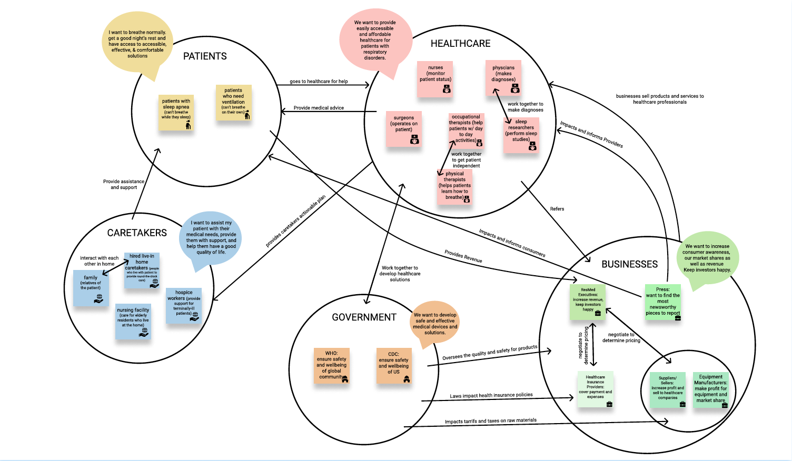
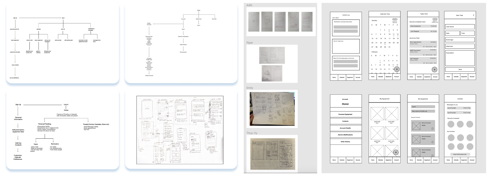
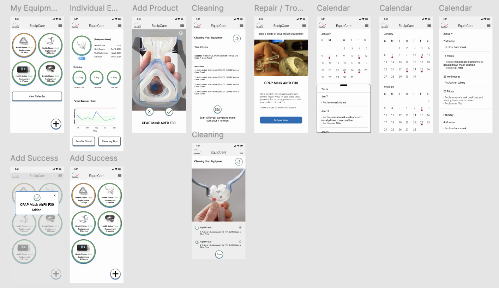
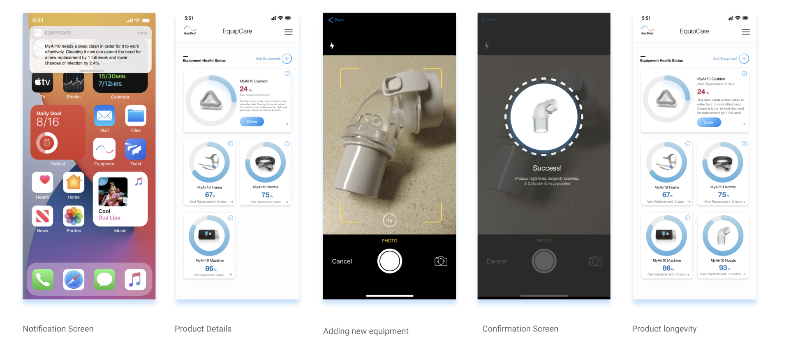
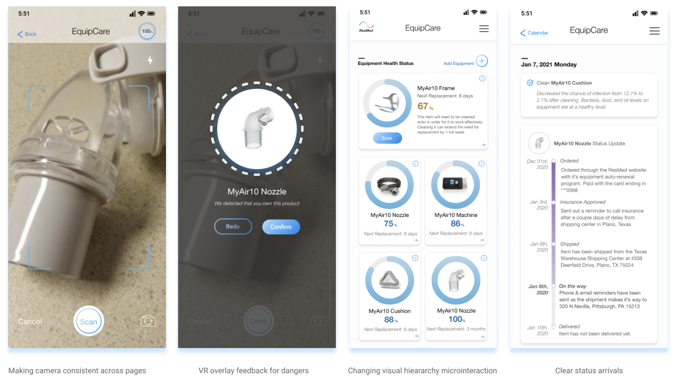
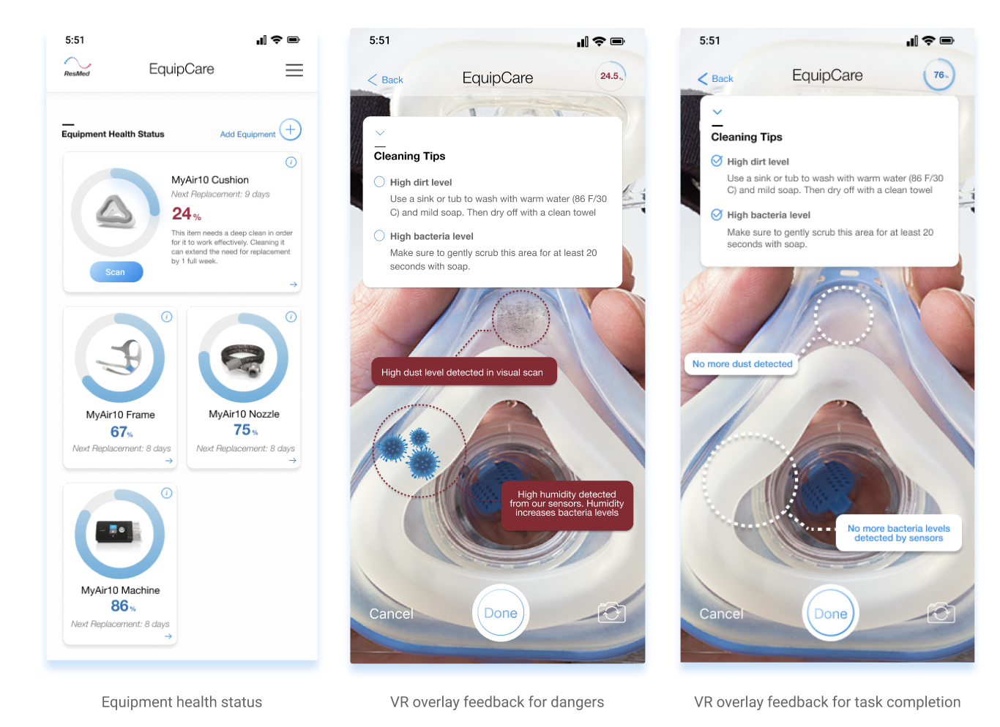

Role
Lead product designer
Timeline
Feb 2024 - Mar 2025
(2 weeks)
Tools
Figma, Slack, Discord
Skills
Pop-up Research, Stakeholder Map, Design Brief, Mobile Design
Overview
I was the lead mobile apps designer for developing an AI-assisted equipment care app for a healthcare client, ResMed.
Problem
One of ResMed’s long term goals is to improve the quality of out-of-hospital care and find new customers to generate revenue. EquipCare shifts ResMed's relationship with customers from a one-time equipment purchase to an ongoing digital experience—helping users care for the equipment they already own while creating natural opportunities to discover what ResMed can offer next.
Solution
We delivered a proof-of-concept, EquipCare, which transforms equipment maintenance from a task users have to remember into an interactive experience that keeps ResMed connected to them throughout the lifecycle of their equipment. This is what our product offers:
- Reach new customers by offering useful equipment-care and educational tools that can introduce people to ResMed before they become customers.
- Leverage AR/VR technology to recommend cleaning, maintenance, & upkeep, turning everyday equipment maintenance into an entry point to the broader ResMed ecosystem
- Simplify the path to purchase by connecting maintenance recommendations directly to relevant ResMed products, creating a seamless journey from identifying a need to finding the right solution
Discover
Understanding the problem space and the people involved
We began by learning about ResMed, sleep apnea, and the broader respiratory-care ecosystem. Through secondary research and conversations with a sleep apnea caregiver, we uncovered the complexity involved in maintaining CPAP equipment.
Our research revealed that equipment maintenance was more than a simple reminder problem. Patients and caregivers had to keep track of cleaning, replacement schedules, troubleshooting, and other equipment-related tasks—creating significant cognitive load.
I synthesized our findings into a stakeholder map to understand the relationships between patients, caregivers, healthcare providers, businesses, and government organizations.
Key insight: Equipment maintenance was a recurring burden with many moving parts, creating an opportunity to simplify the experience.


Evaluate
Turning research into an opportunity
Our initial concept focused on helping patients manage equipment replacement dates and sleep-apnea-related appointments. We explored the idea through sketches and early wireframes. However, critique revealed that a traditional task-management experience wasn't taking full advantage of the possibilities of a mobile service. It also attempted to solve too broad a problem.
We stepped back and evaluated what could create more meaningful value for patients while also supporting ResMed's goals. This led to an important pivot: From managing equipment-related tasks manually, to using data from equipment and mobile devices to proactively manage equipment maintenance. We narrowed our focus from general equipment management to cleaning, allowing us to explore a more specific and meaningful problem.

Design
Designing a proactive equipment-care experience
With our direction established, we designed EquipCare around the idea of making equipment maintenance more proactive and less dependent on users remembering what to do. We explored how mobile capabilities—including the camera, sensors, and augmented reality—could collect information about a patient's equipment and translate it into useful actions.
We stepped back and evaluated what could create more meaningful value for patients while also supporting ResMed's goals. This led to an important pivot: From managing equipment-related tasks manually, to using data from equipment and mobile devices to proactively manage equipment maintenance. We narrowed our focus from general equipment management to cleaning, allowing us to explore a more specific and meaningful problem.




